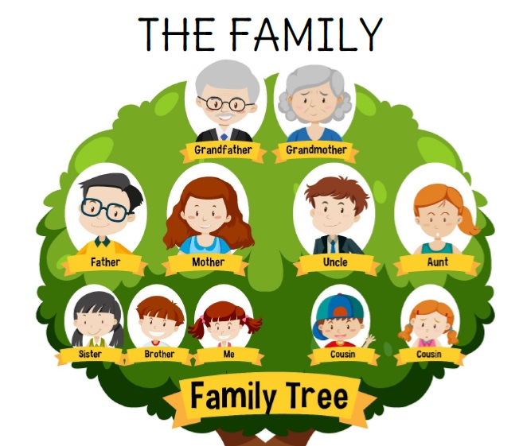

| Français | Anglais |
|---|---|
| La famille | The family |
| Le père | The father |
| La mère | The mother |
| Le frère | The brother |
| La sœur | The sister |
| Les parents | The parents |
| Le fils | The son |
| La fille | The daughter |
| Le grand-père | The grandfather |
| La grand-mère | The grandmother |
| L’oncle | The uncle |
| La tante | The aunt |
| Le cousin / la cousine | The cousin |
| Le neveu | The nephew |
| La nièce | The niece |
En anglais, le mot "siblings" signifie "frères et sœurs".
C’est un mot pratique pour parler des membres de la fratrie sans préciser le genre.
✔️ Exemple : Do you have any siblings? = As-tu des frères ou sœurs ?
❌ On ne dit pas "Do you have brother or sister?" car il manque les articles ("a") et la structure n'est pas correcte.